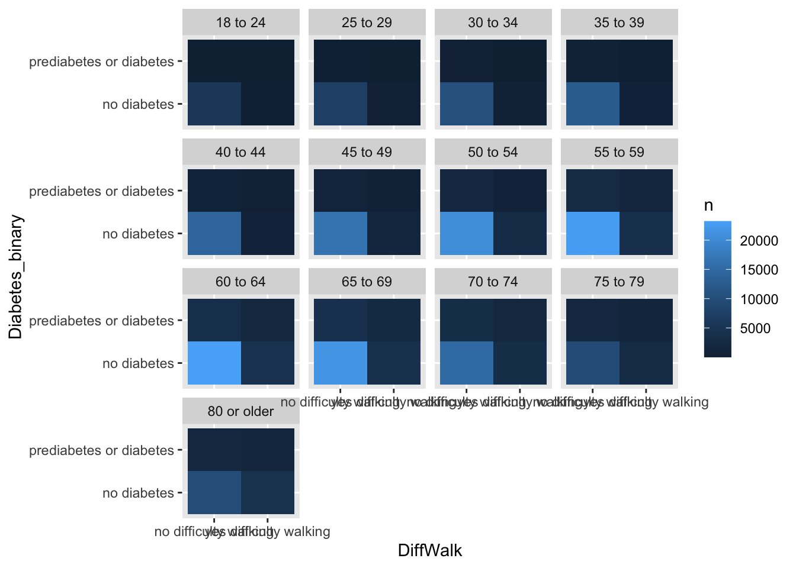
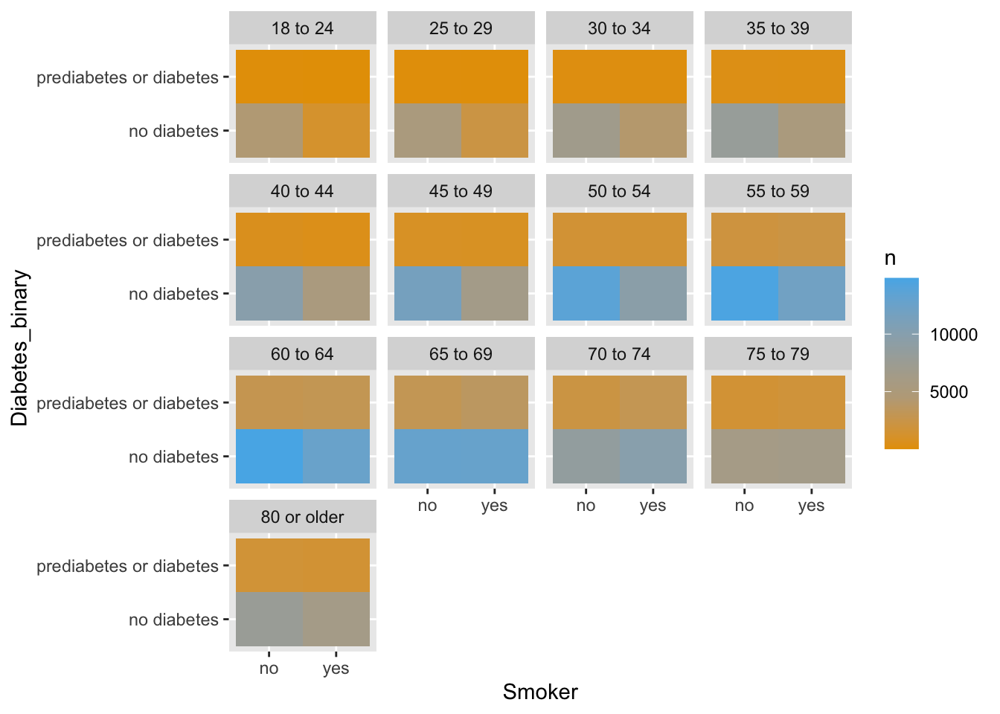
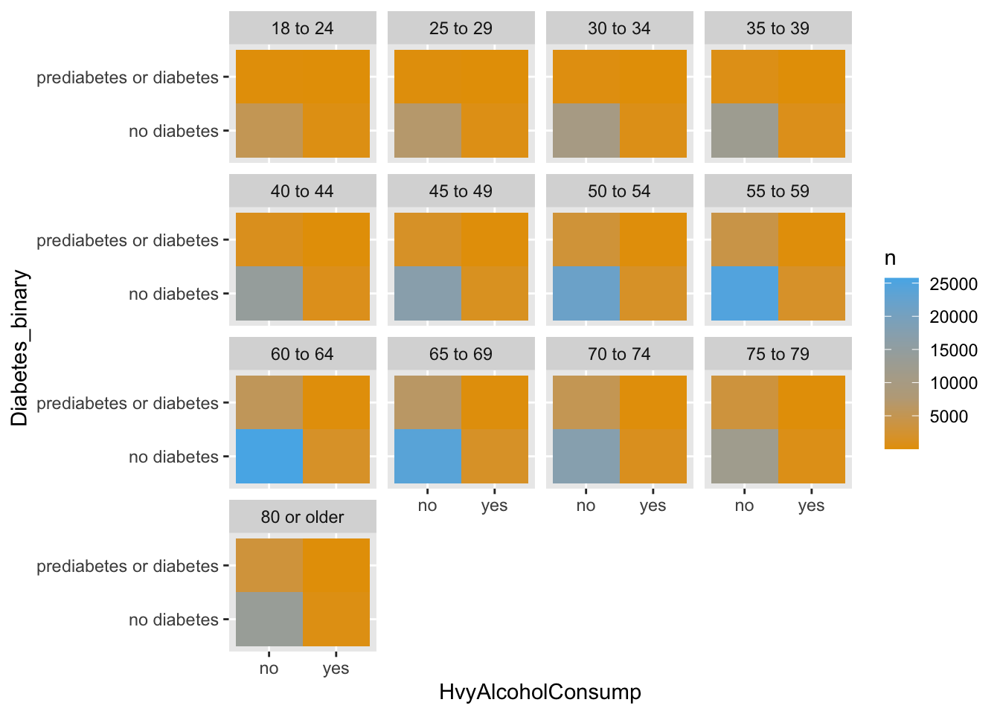
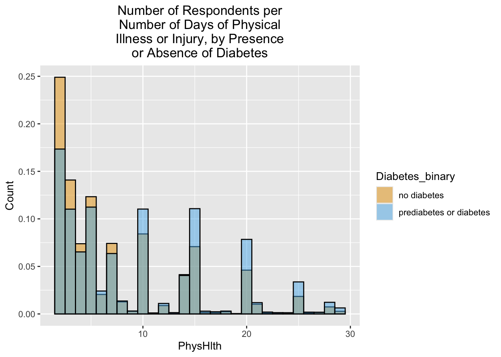
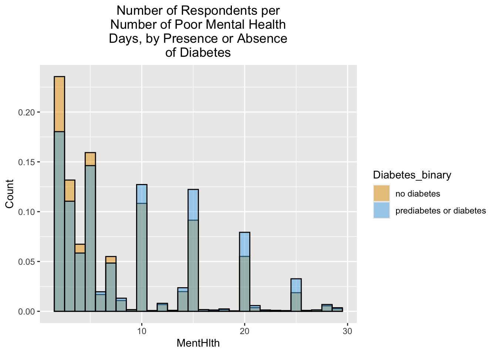
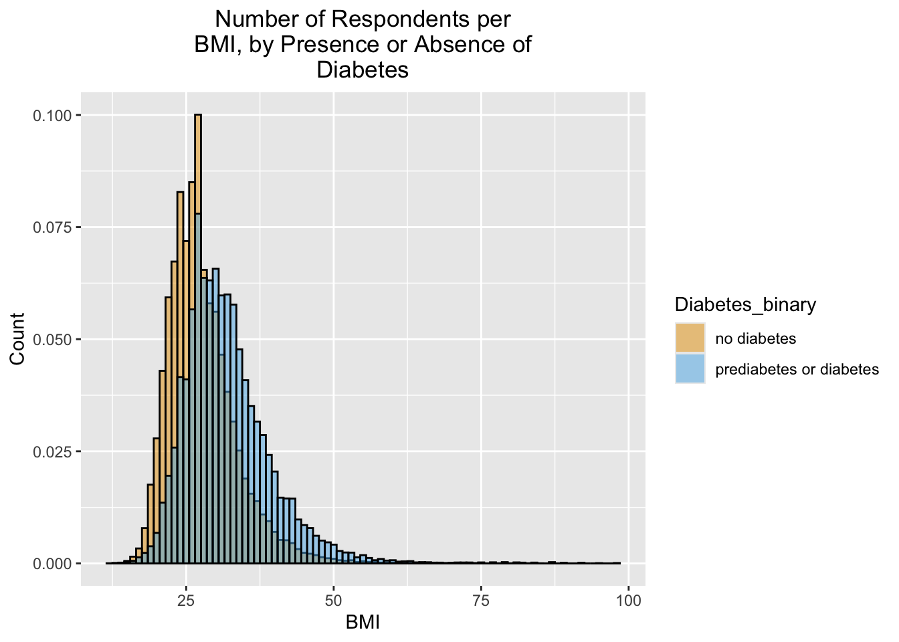

We will explore the Centers for Disease Control and Prevention (CDC) Behavioral Risk Factor Surveillance System (BRFSS) data set of diabetes binary health indicators from 2015. Two questions that we would like to address in this exploratory data analysis:
Which factors are most predictive of diabetes risk?
Can we use a subset of the risk factors to accurately predict whether an individual has diabetes?
Read In The Data
library(tidyverse)
── Attaching core tidyverse packages ──────────────────────── tidyverse 2.0.0 ──
✔ dplyr 1.1.4 ✔ readr 2.1.5
✔ forcats 1.0.0 ✔ stringr 1.5.1
✔ ggplot2 3.5.1 ✔ tibble 3.2.1
✔ lubridate 1.9.3 ✔ tidyr 1.3.1
✔ purrr 1.0.2
── Conflicts ────────────────────────────────────────── tidyverse_conflicts() ──
✖ dplyr::filter() masks stats::filter()
✖ dplyr::lag() masks stats::lag()
ℹ Use the conflicted package (<http://conflicted.r-lib.org/>) to force all conflicts to become errors
Attaching package: 'vroom'
The following object is masked from 'package:yardstick':
spec
The following object is masked from 'package:scales':
col_factor
The following objects are masked from 'package:readr':
as.col_spec, col_character, col_date, col_datetime, col_double,
col_factor, col_guess, col_integer, col_logical, col_number,
col_skip, col_time, cols, cols_condense, cols_only, date_names,
date_names_lang, date_names_langs, default_locale, fwf_cols,
fwf_empty, fwf_positions, fwf_widths, locale, output_column,
problems, spec
Rows: 253680 Columns: 22
── Column specification ────────────────────────────────────────────────────────
Delimiter: ","
dbl (22): Diabetes_binary, HighBP, HighChol, CholCheck, BMI, Smoker, Stroke,...
ℹ Use `spec()` to retrieve the full column specification for this data.
ℹ Specify the column types or set `show_col_types = FALSE` to quiet this message.
Summarize each column to see if there are any unusual values.
summary(data)
Diabetes_binary HighBP HighChol CholCheck
Min. :0.0000 Min. :0.000 Min. :0.0000 Min. :0.0000
1st Qu.:0.0000 1st Qu.:0.000 1st Qu.:0.0000 1st Qu.:1.0000
Median :0.0000 Median :0.000 Median :0.0000 Median :1.0000
Mean :0.1393 Mean :0.429 Mean :0.4241 Mean :0.9627
3rd Qu.:0.0000 3rd Qu.:1.000 3rd Qu.:1.0000 3rd Qu.:1.0000
Max. :1.0000 Max. :1.000 Max. :1.0000 Max. :1.0000
BMI Smoker Stroke HeartDiseaseorAttack
Min. :12.00 Min. :0.0000 Min. :0.00000 Min. :0.00000
1st Qu.:24.00 1st Qu.:0.0000 1st Qu.:0.00000 1st Qu.:0.00000
Median :27.00 Median :0.0000 Median :0.00000 Median :0.00000
Mean :28.38 Mean :0.4432 Mean :0.04057 Mean :0.09419
3rd Qu.:31.00 3rd Qu.:1.0000 3rd Qu.:0.00000 3rd Qu.:0.00000
Max. :98.00 Max. :1.0000 Max. :1.00000 Max. :1.00000
PhysActivity Fruits Veggies HvyAlcoholConsump
Min. :0.0000 Min. :0.0000 Min. :0.0000 Min. :0.0000
1st Qu.:1.0000 1st Qu.:0.0000 1st Qu.:1.0000 1st Qu.:0.0000
Median :1.0000 Median :1.0000 Median :1.0000 Median :0.0000
Mean :0.7565 Mean :0.6343 Mean :0.8114 Mean :0.0562
3rd Qu.:1.0000 3rd Qu.:1.0000 3rd Qu.:1.0000 3rd Qu.:0.0000
Max. :1.0000 Max. :1.0000 Max. :1.0000 Max. :1.0000
AnyHealthcare NoDocbcCost GenHlth MentHlth
Min. :0.0000 Min. :0.00000 Min. :1.000 Min. : 0.000
1st Qu.:1.0000 1st Qu.:0.00000 1st Qu.:2.000 1st Qu.: 0.000
Median :1.0000 Median :0.00000 Median :2.000 Median : 0.000
Mean :0.9511 Mean :0.08418 Mean :2.511 Mean : 3.185
3rd Qu.:1.0000 3rd Qu.:0.00000 3rd Qu.:3.000 3rd Qu.: 2.000
Max. :1.0000 Max. :1.00000 Max. :5.000 Max. :30.000
PhysHlth DiffWalk Sex Age
Min. : 0.000 Min. :0.0000 Min. :0.0000 Min. : 1.000
1st Qu.: 0.000 1st Qu.:0.0000 1st Qu.:0.0000 1st Qu.: 6.000
Median : 0.000 Median :0.0000 Median :0.0000 Median : 8.000
Mean : 4.242 Mean :0.1682 Mean :0.4403 Mean : 8.032
3rd Qu.: 3.000 3rd Qu.:0.0000 3rd Qu.:1.0000 3rd Qu.:10.000
Max. :30.000 Max. :1.0000 Max. :1.0000 Max. :13.000
Education Income
Min. :1.00 Min. :1.000
1st Qu.:4.00 1st Qu.:5.000
Median :5.00 Median :7.000
Mean :5.05 Mean :6.054
3rd Qu.:6.00 3rd Qu.:8.000
Max. :6.00 Max. :8.000
It appears that BMI is given as a percentile (otherwise, 98 would be quite high). We have a number of categorical variables that would be good to convert to factors.
data <- data |>mutate(Diabetes_binary=factor(Diabetes_binary,levels=c("0","1"),labels=c("no diabetes","prediabetes or diabetes")),HighBP=factor(HighBP,levels=c("0","1"),labels=c("no high BP","high BP")),HighChol=factor(HighChol,levels=c("0","1"),labels=c("no high cholesterol","high cholesterol")),CholCheck=factor(CholCheck,levels=c("0","1"),labels=c("no cholesterol check in 5 years","yes cholesterol check in 5 years")),#BMI=factor(BMI),Smoker=factor(Smoker,levels=c("0","1"),labels=c("no","yes")),Stroke=factor(Stroke,levels=c("0","1"),labels=c("no","yes")),HeartDiseaseorAttack=factor(HeartDiseaseorAttack,levels=c("0","1"),labels=c("no","yes")),PhysActivity=factor(PhysActivity,levels=c("0","1"),labels=c("no","yes")),Fruits=factor(Fruits,levels=c("0","1"),labels=c("no","yes")),Veggies=factor(Veggies,levels=c("0","1"),labels=c("no","yes")),HvyAlcoholConsump=factor(HvyAlcoholConsump,levels=c("0","1"),labels=c("no","yes")),AnyHealthcare=factor(AnyHealthcare,levels=c("0","1"),labels=c("no","yes")),NoDocbcCost=factor(NoDocbcCost,levels=c("0","1"),labels=c("no","yes")),GenHlth=factor(GenHlth,levels=c("1","2","3","4","5"),labels=c("excellent","very good","good","fair","poor")),#MentHlth=#factor(MentHlth),#PhysHlth=#factor(PhysHlth),DiffWalk=factor(DiffWalk,levels=c("0","1"),labels=c("no difficulty walking","yes difficulty walking")),Sex=factor(Sex,levels=c("0","1"),labels=c("female","male")),Age=factor(Age,levels=c("1","2","3","4","5","6","7","8","9","10","11","12","13"),labels=c("18 to 24","25 to 29","30 to 34","35 to 39","40 to 44","45 to 49","50 to 54","55 to 59","60 to 64","65 to 69","70 to 74","75 to 79","80 or older")),Education=factor(Education,levels=c("1","2","3","4","5","6"),labels=c("Never attended school or only kindergarten","Grades 1 through 8 (Elementary)","Grades 9 through 11 (Some high school)","Grade 12 or GED (High school graduate)","College 1 year to 3 years (Some college or technical school)","College 4 years or more (College graduate)")),Income=factor(Income,levels=c("1","2","3","4","5","6","7","8"),labels=c("Less than $10,000","$10,000 to less than $15,000","$15,000 to less than $20,000","$20,000 to less than $25,000","$25,000 to less than $35,000","$35,000 to less than $50,000","$50,000 to less than $75,000","$75,000 or more")) )
Clean Up Data As Needed
Investigate Distributions
Contingency Tables
We will examine one-, two-, and three-way contingency tables. For the one-way contingency table related to the diabetes status of respondents:
no diabetes prediabetes or diabetes
female 123563 18411
male 94771 16935
table(data$Age,data$Diabetes_binary)
no diabetes prediabetes or diabetes
18 to 24 5622 78
25 to 29 7458 140
30 to 34 10809 314
35 to 39 13197 626
40 to 44 15106 1051
45 to 49 18077 1742
50 to 54 23226 3088
55 to 59 26569 4263
60 to 64 27511 5733
65 to 69 25636 6558
70 to 74 18392 5141
75 to 79 12577 3403
80 or older 14154 3209
table(data$Education,data$Diabetes_binary)
no diabetes
Never attended school or only kindergarten 127
Grades 1 through 8 (Elementary) 2860
Grades 9 through 11 (Some high school) 7182
Grade 12 or GED (High school graduate) 51684
College 1 year to 3 years (Some college or technical school) 59556
College 4 years or more (College graduate) 96925
prediabetes or diabetes
Never attended school or only kindergarten 47
Grades 1 through 8 (Elementary) 1183
Grades 9 through 11 (Some high school) 2296
Grade 12 or GED (High school graduate) 11066
College 1 year to 3 years (Some college or technical school) 10354
College 4 years or more (College graduate) 10400
table(data$Income,data$Diabetes_binary)
no diabetes prediabetes or diabetes
Less than $10,000 7428 2383
$10,000 to less than $15,000 8697 3086
$15,000 to less than $20,000 12426 3568
$20,000 to less than $25,000 16081 4054
$25,000 to less than $35,000 21379 4504
$35,000 to less than $50,000 31179 5291
$50,000 to less than $75,000 37954 5265
$75,000 or more 83190 7195
table(data$GenHlth,data$Diabetes_binary)
no diabetes prediabetes or diabetes
excellent 44159 1140
very good 82703 6381
good 62189 13457
fair 21780 9790
poor 7503 4578
table(data$Smoker,data$Diabetes_binary)
no diabetes prediabetes or diabetes
no 124228 17029
yes 94106 18317
data |>count(Age, DiffWalk, Diabetes_binary) |>ggplot(aes(x = DiffWalk, y = Diabetes_binary)) +geom_tile(aes(fill = n)) +facet_wrap(~ Age)

We will also look for relationships between diabetes status, smoking, and alcohol consumption across age brackets:
data |>count(Age, Smoker, Diabetes_binary) |>ggplot(aes(x = Smoker, y = Diabetes_binary)) +geom_tile(aes(fill = n)) +scale_fill_gradientn(colours =c("#E69F00", "#56B4E9"), values =c(0,0.3,1)) +facet_wrap(~ Age)

data |>count(Age, HvyAlcoholConsump, Diabetes_binary) |>ggplot(aes(x = HvyAlcoholConsump, y = Diabetes_binary)) +geom_tile(aes(fill = n)) +scale_fill_gradientn(colours =c("#E69F00", "#56B4E9"), values =c(0,0.3,1)) +facet_wrap(~ Age)

Scatterplots & Histograms For Numeric Variables
We will examine the relationship between the number of days of poor mental health (in the past 30 days) and the number of days of physical illness or injury (in the past 30 days):
Then, we will examine the distributions of PhysHlth, MentHlth, and BMI based on whether individuals have diabetes.
ggplot(data |>filter(PhysHlth >1& PhysHlth <30),aes(x=PhysHlth )) +geom_histogram(alpha=0.5,aes(y=..density..,fill = Diabetes_binary, col=I("black")),position ="identity",binwidth=1) +scale_fill_manual(values=c("#E69F00", "#56B4E9")) +xlab("PhysHlth") +ylab("Count") +ggtitle(str_wrap("Number of Respondents per Number of Days of Physical Illness or Injury, by Presence or Absence of Diabetes",30)) +theme(plot.title =element_text(hjust =0.5))
Warning: The dot-dot notation (`..density..`) was deprecated in ggplot2 3.4.0.
ℹ Please use `after_stat(density)` instead.

ggplot(data |>filter(MentHlth >1& MentHlth <30),aes(x=MentHlth )) +geom_histogram(alpha=0.5,aes(y=..density..,fill = Diabetes_binary, col=I("black")),position ="identity",binwidth=1) +scale_fill_manual(values=c("#E69F00", "#56B4E9")) +xlab("MentHlth") +ylab("Count") +ggtitle(str_wrap("Number of Respondents per Number of Poor Mental Health Days, by Presence or Absence of Diabetes",30)) +theme(plot.title =element_text(hjust =0.5))

ggplot(data,aes(x=BMI )) +geom_histogram(alpha=0.5,aes(y=..density..,fill = Diabetes_binary, col=I("black")),position ="identity",binwidth=1) +scale_fill_manual(values=c("#E69F00", "#56B4E9")) +xlab("BMI") +ylab("Count") +ggtitle(str_wrap("Number of Respondents per BMI, by Presence or Absence of Diabetes",30)) +theme(plot.title =element_text(hjust =0.5))

ggplot(data) +geom_boxplot(aes(x = Sex, y = BMI, fill = Diabetes_binary)) +scale_fill_manual(values=c("#E69F00", "#56B4E9"))